Sim-robot-learning · 归档于 2026-10-23
COWBOY
COWBOY: A Scalable Sim-to-Real Framework for Learning Contextual Whole-Body Manipulation
归档到 Robot learning in simulation：在 Isaac Gym 里用 RL 训局部抓取 expert，再蒸馏成移动灵巧手机器人的全身点云 policy，zero-shot sim-to-real，正是这个 project 的 whole-body manipulation + sim-to-real 范围。
TL;DR
- Problem
- 移动机器人抓东西时，base 停哪、相机看哪、从哪个方向抓都由周围场景决定；直接在大量场景里 end-to-end RL，成功率 0%。
- Idea
- 拆成两半：向量化 fabric WBC 负责全局 reaching（走近、注视、避障），3 个 local RL expert 只学局部抓取；两者组合成 teacher，在数千个 full scene 里用 DAgger 蒸馏成一个点云 student。
- Result
- 真机 24 个 in-the-wild 场景、100 个物体，zero-shot 91%；仿真 held-out 平均 92.4%，ManipGen 63.1%，end-to-end RL 0.0%（Tab. 1）。
Problem
走位、视角、抓法都由场景决定，现有方法要么学不出来，要么在 reaching 这一步出错
Running example · 后面每个 stage 都跟着它走
从书架里取物体（Fig. 1 左上）：32-DoF 移动机器人离书架还有一段距离（仿真里起点离目标 0.2–2 m），只有机载输入：neck 上的 depth 相机 + base 上的 LiDAR 给出的 部分点云，和 SAM3 分割出的 目标 3D 位置 → 想要：开到书架前、相机盯住物体、手从书架侧面开口伸进去抓住拉出，抬起 ≥10 cm 且全程无碰撞（§4 的成功标准）。
flowchart LR IN["书架场景
部分点云
+ 目标位置"]:::example IN --> A1["End-to-end RL
点云 policy 直接
在 full scene 里学"] A1 --> AX["场景、避障、抓取
一起学，学不出来
Shelf 0.0%（无障碍 96%）"]:::gap IN --> B1["ManipGen
local policy + AIT*
VLM 定规划目标"] B1 --> BX["目标不顾后续抓取
手臂常停在奇异位形
Shelf 21.2%"]:::gap IN --> C1["Weighted IK 当 WBC
罚 base 重于罚 arm"] C1 --> CX["只伸手、不挪 base
关节到极限、碰撞
平均抓取 43.6%，碰撞 41.4%"]:::gap
“坏在哪”取自 §5、App. G.2 的总体分析，落到书架上是推断；Weighted IK 的数字是 4 类场景的平均（Tab. 4）。
根本问题：场景决定的全身 reaching（base 停哪、看哪、绕开什么）和局部灵巧抓取被绑在一起：一起用 RL 学，学不出来；拆开后把 reaching 交给 planner 或 IK，又会选错中间目标，或只伸手不挪 base。 这篇的切入点：拆开，但不留推理时的中间决策：fabric WBC 包下 reaching、注视和避障，local RL expert 只学局部抓取，组合成 teacher 后蒸馏成一个 policy（Shelf 90.5%，Tab. 1）。
Related work
| 相关工作 | 解决什么 | 怎么解决 | 和本文的区别 |
|---|---|---|---|
| 同一问题 · 别的解法 | |||
| Local policy + motion planner ManipGen | 用 local policy 零样本完成长程操作 | 物体附近用 local RL policy；走近靠 AIT* 规划，VLM 定规划目标 | 推理时靠 planner 和中间目标 → 本文把 reaching 一起蒸馏进 policy，不用 planner |
| 仿真训练的 whole-body RL Deep Whole-Body Control, Visual WBC, VIRAL, SPIN | 腿式、人形、轮式机器人的全身 loco-manipulation | 仿真里 RL 训全身策略（或 motion tracking），再 sim-to-real | 物体×场景的变化范围比本文小 → 本文同时随机化物体和场景 |
| 示教驱动的 mobile manipulation Mobile ALOHA, HoMeR, HoMMI, Vision in Action | 真实世界的移动、全身操作 | 遥操作或人类示教 → 模仿学习 base、手臂和末端的协调 | 每条示教都要带上随场景变的走位、方向、可见性和避障，难扩量 → 本文在仿真里自动生成监督 |
| 相似做法 · 别的问题 | |||
| Sim-to-real 灵巧手 RL DextrAH-G, DextrAH-RGB, DexPoint, DeXtreme | 固定底座的灵巧抓取，或 in-hand 转物体 | 仿真里 RL，输入点云 / depth / RGB，再 sim-to-real | 基本在固定环境里训练和评测 → 本文让物体和场景一起变，还加了移动 base 和 active neck |
| Whole-body controller Pink, Mink, PlaCo, OpenSoT, OCS2, RMP, geometric fabrics | 协调冗余自由度：reaching、姿态、避障、gaze | QP IK、在线优化、MPC 每步求解；RMP / fabrics 用 reactive 的加权 pullback | QP / MPC 每个环境单独求解，难批量 → 本文用 fabrics 的固定计算图，并扩展到移动底座 |
来源：§2 Related Works、App. A，另补 §5 的 ManipGen 做法和 §3.1 的 fabrics（原用于固定底座），未另行检索；§2.1 的 N²M²、ReLMM 等论文没写区别，未列。
Level 1 · Big picture
WBC 管 reaching，local RL 管抓取，组合成 teacher，再蒸馏成一个点云 policy
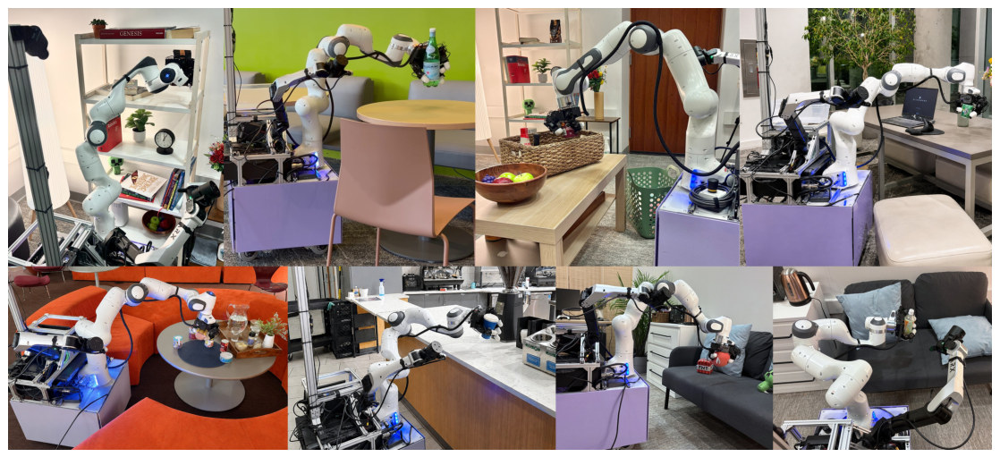
怎么读这张图
- 左上（书架）：周围几何只允许侧抓，policy 选了侧向接近 = 我们的例子（§5）。
- 下排右边两张（同一张深色沙发）：细长的瓶子从侧面抓，规则形状的红色毛绒玩具从上面抓：抓法随物体变。
- 下排左一（橙色沙发）、上排右一（灰色凳子）：base 绕开沙发；base 被凳子挡住时，手臂多伸一些来补。
- 篮子那张：手伸进篮子时避开篮壁。
- 全部是同一个 policy：没有给场景类型、base 位置、相机运动或抓法（§5）。
flowchart LR W["Global reaching
WBC 开到书架前"] --> T["Teacher
WBC + expert
数千个书架布局"] E["Local interaction
expert 从开口抓出"] --> T T --> S["Student
一个点云 policy
仿真 shelf 90.5%"] S --> O["真机 zero-shot
书架场景 89%"]:::win
Level 2 · Stages
5 个 stage
flowchart TD
subgraph SIM["仿真里训练"]
direction LR
S1["1 · Fabric WBC
开到书架前"] --> S2["2 · Local RL experts
从侧面开口抓出"]
S2 --> S3["3 · Full-scene teachers
数千个书架布局"]
S3 --> S4["4 · Distill student
shelf 90.5%"]
end
SIM --> S5["5 · Zero-shot 真机
SAM3 定位，书架 89%"]:::win
click S1 href "#stage-1"
click S2 href "#stage-2"
click S3 href "#stage-3"
click S4 href "#stage-4"
click S5 href "#stage-5"
点击 stage 展开 Level 3 细节。
Level 3 · Details
每个 stage 的细节
Stage 1 Vectorized environment-aware fabric WBC EE 目标位姿 + 看向点 + 局部障碍 → base 速度 + 手臂和 neck 的关节指令
- Why：场景决定的 reaching（base 放哪、看哪、绕开什么）交给控制器，RL 不用学；还要能在数千个环境里并行跑（§3.1）。
- How：每个行为是一个 fabric 项（task map + metric Mi + force fi），全部 pullback 到关节空间相加（Eq. 1），energize 后积分成指令；B 个环境就是批量矩阵乘。
- BA：base 指向 EE 目标的平面投影、车头朝向目标；mmin = 0，目标进入手臂工作空间后 BA 消失。
- EEA：EE 位姿用 7 个 keypoint 表示；mfar = 0，只在靠近时生效，避免手臂提前伸直 → 远处 base 动、近处 arm 动（coarse-to-fine）。
- GCA：SO(3) attractor 让相机光轴对准看向点，加一个弱的 neck 姿态正则，缓解部分可观测。
- BR：机器人用碰撞球近似，和局部 cuboid、capsule、sphere 批量算距离（Warp kernel），每个球一个排斥项；另有 PR（姿态正则）和 JLR（关节限位）。
- 规模：60 Hz，最多 4096 个环境，每环境每步 0.03 ms；所有任务同一组参数（§3.1、App. C）。
- 为什么用 fabrics：QP IK、优化型 WBC、MPC 每个环境每步都要单独求解，难批量；fabrics 是固定计算图（App. A）。
flowchart LR T["输入
EE 目标 + 看向点"] --> F["Fabric 项
BA · EEA · GCA
BR · PR · JLR"] F --> P["Pullback 合成
Eq. 1 + energize"] P --> O["输出
base 速度 + 关节指令"]
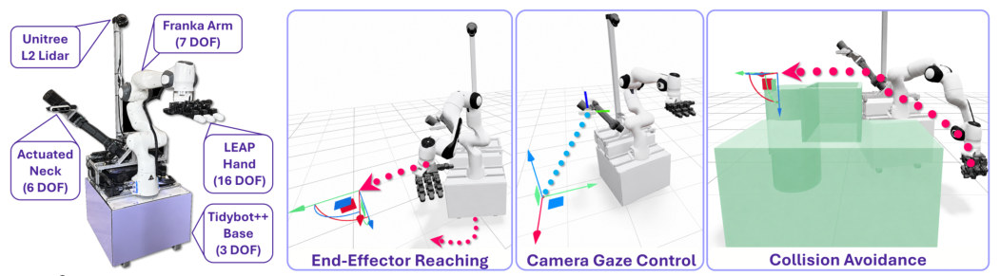
怎么读这张图
- 左 Robot System：Tidybot++ Base 3 DOF、Franka Arm 7、LEAP Hand 16、Actuated Neck 6（ARX X5 带 RealSense D435）、Unitree L2 Lidar：例子里的机器人。
- End-Effector Reaching：粉色点线从手连到地上的目标坐标系，底部弯箭头是 base 的移动：BA + EEA 一起把手送到目标（例子：开到书架开口）。
- Camera Gaze Control：蓝色点线从相机指向看向点：GCA 让 neck 相机始终对准目标（例子：盯住书架里的物体）。
- Collision Avoidance：绿色块是障碍，粉色点线绕过它：BR 把碰撞球推开（例子：绕开书架侧板）。
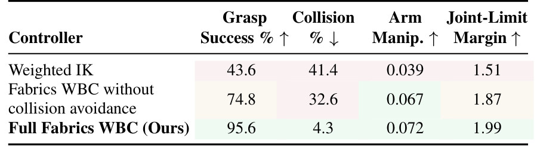
Running example 在这一步
输入：EE 目标 = 书架开口外的 switching target（向外、向上各 0.15 m，朝向是侧抓要的方向），看向点 = 物体位置 → BA 把 base 开到书架前并朝向它 → 进入手臂工作空间后 BA 淡出，EEA 把手送到开口 → BR 让手臂和 base 绕开书架侧板 → GCA 让相机一直对准物体。
Stage 2 Contact-rich local RL experts EE 坐标系下的局部特权观测 → 相对 EE 指令 + 16 个手关节指令，由 WBC 执行
- Why：WBC 已把手送到物体附近，RL 只学局部接触：场景小省显存，观测简单，动作维度低；观测在 EE 坐标系里，同一个 expert 能复用到任何 full scene（§3.2）。
- How：三个 expert，各管一种 grasp affordance：top-down（开口朝上的盒子）、side grasp（细长物体，旁边两面墙）、constrained side grasp（书架，从侧面开口取出）。
- 观测：actor 61-D（Tab. 6）：LEAP 关节、指尖、局部 scene-box 的位姿和尺寸、物体和目标位姿、物体 bbox；critic 另有 106-D 特权状态（asymmetric）。
- 动作：22-D = EE 平移 3 + 旋转 3 + LEAP 16，转成增量后由 WBC 追踪（App. D.2）。
- Reward：只有靠近、对齐、抬起、手指蜷曲和动作正则；没有碰撞惩罚，因为 WBC 的动作本身避障（App. D.4）。
- 训练：PPO（rl_games），Isaac Gym 8192 个环境，单张 A6000 约 36 小时；物体来自 Objaverse；domain randomization + 随机外力（App. D.5、D.6）。
flowchart LR O["局部观测 61-D
书架内腔 + 物体 bbox"] --> A["PPO actor
constrained side grasp"] A --> D["22-D 动作
ΔEE 6 + 手 16"] D --> W["WBC 执行
拉到开口外 0.10 m"]
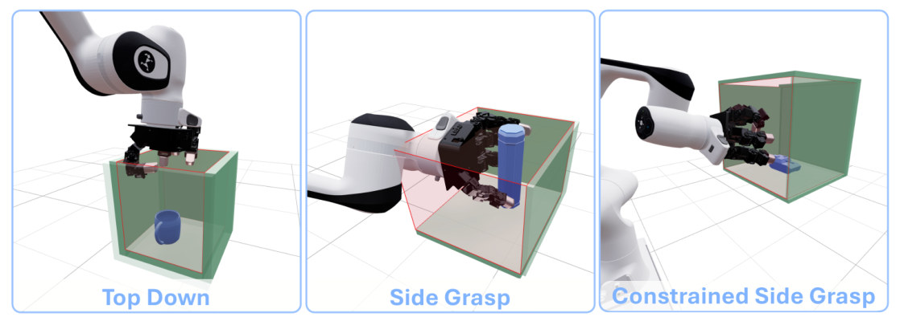
怎么读这张图
- 绿色面和红边：绿色是墙，红边围出 local interaction region（Fig. 3 说的 red-shaded volume）；expert 只在这个盒子里训练。
- Top Down：盒子开口朝上，手从上面抓杯子。
- Side Grasp：细长的蓝色瓶子，手从侧面握住。
- Constrained Side Grasp：有顶的盒子，手从侧面开口伸进去：这就是例子里书架用的 expert。
Running example 在这一步
constrained side-grasp expert 的训练场景：书架内腔 [0.20, 0.25, 0.25]–[0.35, 0.50, 0.40] m，壁厚 0.01 m；EE 从侧面开口外 0.15–0.35 m 出发，yaw、roll、pitch 扰动最多 45°；目标在开口外 0.10 m、书架半高处 → 学会抓住物体并拉出来，不碰书架。Reward = 1.0 rhand,obj + 4.0 robj,goal + 2.0 rlift + 0.5 rcurl − 0.001 ract（App. D.1、D.4）。
Stage 3 Full-scene teachers 1 个 local expert + 它的局部区域 → 数千个 full-scene 布局里的两阶段 teacher
- Why：expert 只认局部几何；只要 full scene 保留同样的局部约束，它就能复用 → 3 个 expert 监督数千个场景（§3.3）。
- 生成场景：每个环境先采样目标物体和 expert，再生成包含这个局部区域的 full scene；expert 决定场景族：top-down → 桌面、抽屉、盒子；side grasp → 放细长物体的杂乱桌面；constrained side grasp → 书架（App. E.1）。
- 随机化：场景几何、杂物、物理参数；背景干扰物只出现在点云里；接近路径旁放 [0.15, 0.15, 0.3]–[0.4, 0.4, 1.7] m 的障碍立方体，逼出绕行和朝向调整。
- Approach phase：机器人在离目标 0.2–2 m 处起步，WBC 把 EE 送到 switching target，同时避障、盯住物体。
- Interaction phase：EE 进入 expert 的初始分布后，expert 输出相对 EE 和手的指令，由 WBC 执行；看向点仍是物体。
- 衔接：WBC 在 98.4% 的 trial 里能把 EE 送进 expert 的初始分布（§5）。
flowchart LR E["采样物体 + expert
constrained side grasp"] --> G["生成 full scene
书架 + 障碍 + 杂物"] G --> AP["Approach phase
WBC 开到开口外"] AP --> IP["Interaction phase
expert 抓出，97.3%"]:::win
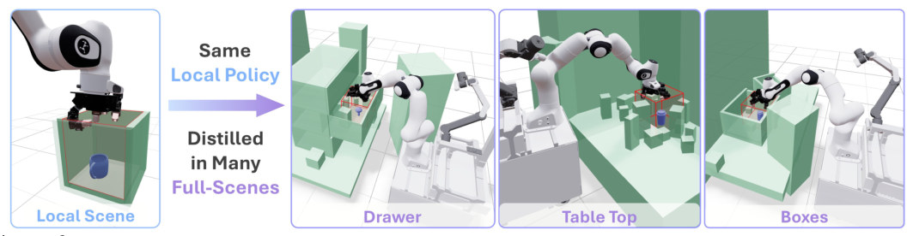
怎么读这张图
- Local Scene：红色区域里的蓝色物体，expert 只在这里训练（Stage 2）。
- Same Local Policy → Distilled in Many Full-Scenes：expert 不重训，换的是外面的场景。
- Drawer / Table Top / Boxes：同一个红框出现在抽屉、杂乱桌面、盒子里；机器人要先绕过绿色障碍走过去。
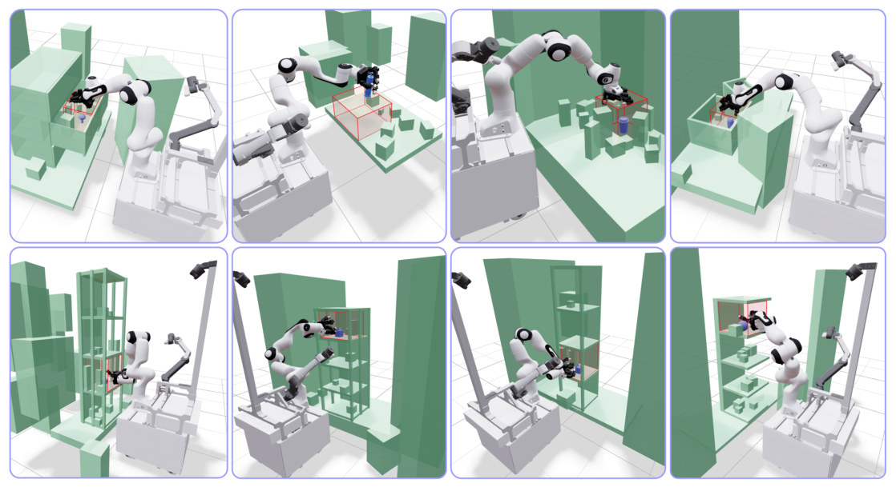
怎么读这张图
- 上排：抽屉、桌面、盒子等场景，红框是嵌进去的局部区域。
- 下排：4 种书架，高度、层数和周围障碍都不同 = 例子在仿真里的样子。
Running example 在这一步
书架 full scene（Fig. 9 下排）：switching target = 书架开口处再向外、向上各 0.15 m，朝向是 expert 要的侧向接近 → WBC 从 0.2–2 m 外开过来 → EE 进入分布后 constrained side-grasp expert 接手。Teacher 在 shelf 上抓取 97.3%、碰撞 2.4%（Tab. 2）。
Stage 4 Multi-teacher DAgger distillation 机载部分点云 + 关节状态 + 目标位置估计 → 32-D 全身动作 + 目标位置更新
- Why：teacher 用了特权信息（精确场景几何、物体状态），真机没有；需要一个只看机载传感器的 policy，一个网络覆盖三类 teacher（§3.3）。
- 渲染部分观测：先在网格表面采样 GT 点云，再向量化渲染成 depth（212×120）和 LiDAR（32768 点）；1024 个环境分别用 0.07 s 和 0.25 s（App. F）。
- 点云输入：每个传感器取 base 周围 1.5 m 圆柱 1024 点 + 目标周围 0.5 m 球 512 点，共 3072 点，转到 Franka base 坐标系；另有 Franka 7、ARX 6、LEAP 16 关节、LEAP 目标差 16、目标位置 3（Tab. 11）。
- 网络：PointNet set abstraction → 128 个点云 token + 5 个状态 token → transformer（6 层 encoder + 6 层 decoder）；action query 输出 32-D 动作（base 3 + Franka 7 + LEAP 16 + neck 6），辅助 query 预测目标位置的增量，回灌给下一步（App. E.5）。
- 训练：multi-teacher online DAgger，L = Lact + 0.1 Lobj；8192 个 full-scene 环境、250 个物体，8 张 A6000 约 60 小时，每个 rank 跑一种 teacher（§3.3、App. E.5）。
- 稳定训练：前 10k 步全执行 teacher 动作，之后 10k 步线性降到 0；一部分环境（ρtele = 0.2）会把物体瞬移，逼 student 学会恢复（App. E.5、E.7）。
flowchart LR R["渲染部分点云
depth + LiDAR"] --> C["裁剪 3072 点
base 1.5 m，目标 0.5 m"] C --> TF["Transformer
+ 关节 + 目标位置"] TF --> A["32-D 动作
shelf 90.5%"]:::win T["Teacher 动作 a*
DAgger 监督"] -.-> A
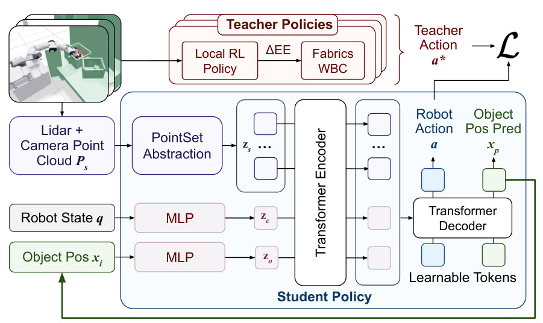
怎么读这张图
- 红框 Teacher Policies：Local RL Policy →ΔEE→ Fabrics WBC，给出 Teacher Action a*（Stage 3 的 teacher）。
- Lidar + Camera Point Cloud Ps → PointSet Abstraction → zs：3072 个点变成点云 token（例子：书架和物体的部分点云）。
- Robot State q、Object Pos xi → MLP → zc、zo：关节状态和目标位置各成 token。
- Transformer Encoder → Decoder + Learnable Tokens：输出 Robot Action a（32-D）和 Object Pos Pred xp。
- 绿色回线：xp 回到 Object Pos xi，下一步用它（自回归跟踪目标）；a 和 a* 之间算 loss ℒ。
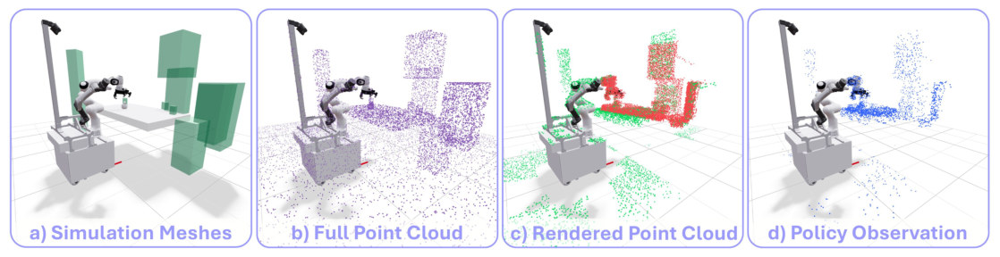
怎么读这张图
- a) Simulation Meshes → b) Full Point Cloud：在 primitive 网格表面采样，得到 GT 全点云。
- c) Rendered Point Cloud：向量化渲染出各传感器能看到的部分：绿 = LiDAR，红 = depth 相机。
- d) Policy Observation：两路下采样后拼起来，就是 student 的输入。跳过 c) 直接用 b) 训练，真机 0.0%（Tab. 3）。
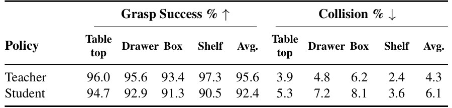
Running example 在这一步
书架上 student 抓取 90.5%（teacher 97.3%），碰撞 3.6%（Tab. 2）。论文认为 shelf 掉得最多，是因为遮挡更重、侧向拉出要更精确的避障（§5）。
Stage 5 Zero-shot real-world deployment SAM3 prompt + 机载传感器 → 真机全身抓取
- Why：真机没有物体真值位置，student 需要一个目标位置才知道抓哪个（App. E.6）。
- 初始化：SAM3 按 prompt 分割目标，取概率最高的 mask，抬到 3D 取点云质心 → 初始目标位置。
- 跟踪：policy 用辅助头以 60 Hz 自回归更新目标位置；SAM3 3 Hz 有有效检测就覆盖纠正；SAM3 中途失败就继续自回归，失败算进成功率。
- 评测：24 个真实场景，每个场景 20 个固定物体 + 从 100 个随机物体里抽 5 个，每个物体 3 个朝向；抬起 10 cm 且无碰撞算成功（§4）。
flowchart LR Q["SAM3 prompt
书架上的目标"] --> M["Mask → 3D 质心
初始目标位置"] M --> PI["Policy 60 Hz
动作 + 更新目标位置"] PI --> G["抬起 ≥10 cm
书架场景 89%、84%"]:::win S3H["SAM3 3 Hz
有检测就纠正"] --> PI
Running example 在这一步
真机书架类场景 89% 和 84%（Fig. 5 左上、右下），低于 91% 的平均：侧抓容易把物体碰倒成不可恢复状态（§5）。接着同一个 policy 来到深色沙发（Fig. 1 下排右边两张）：瓶子从侧面抓，红色毛绒玩具从上面抓，没有给任何抓法条件。
Recap：例子覆盖了论文的哪些 idea
| 论文里的 idea | 例子里在哪体现 |
|---|---|
| Contextual whole-body manipulation | Fig. 1：书架逼出侧向接近；沙发上瓶子侧抓、毛绒玩具从上抓 |
| 拆成 global reaching + local interaction | Stage 1 + 2：WBC 开到书架开口，expert 接手拉出 |
| BA + EEA 的 coarse-to-fine reaching | Stage 1：远处 base 动，进入手臂工作空间后手臂接手 |
| Active vision（GCA） | Stage 1：neck 相机一直对准书架里的物体；固定相机真机只有 46.7%（Tab. 3） |
| 碰撞球 + 排斥 fabric | Stage 1：绕开书架侧板；去掉后碰撞 32.6%（Tab. 4） |
| WBC 当 RL 的动作接口 | Stage 2：expert 只输出 ΔEE 和手指令，WBC 执行 |
| 每种 grasp affordance 一个 local expert | Stage 2：书架用 constrained side grasp；沙发上的瓶子和毛绒玩具对应 side grasp 和 top-down |
| Local → full scene 复用 | Stage 3：同一个书架 expert 嵌进数千个书架布局 |
| 两阶段 teacher + switching target | Stage 3：开口外 0.15 m 处由 WBC 交给 expert |
| 向量化 depth / LiDAR 渲染 | Stage 4：不渲染、直接用 GT 全点云，真机 0.0%（Tab. 3） |
| Multi-teacher DAgger → 点云 transformer | Stage 4：一个 student 在 shelf 上 90.5% |
| 目标位置自回归跟踪 + SAM3 | Stage 5：SAM3 给初始位置，60 Hz 跟踪、3 Hz 纠正 |
| 主结果 | Stage 5：真机书架 89%、84%；24 个场景平均 91% |
Results
结果一览
- 91% 真机 24 个 in-the-wild 场景、100 个物体，zero-shot（Fig. 5）；冰箱、楼梯、椅子这类场景仿真里根本没建模（§5）。
- 92.4% 仿真 held-out 平均抓取成功率；ManipGen 63.1%，end-to-end RL 0.0%；Shelf 上 90.5 vs 21.2 vs 0.0（Tab. 1）。
- 95.6 → 92.4 teacher → student 平均抓取成功率，碰撞 4.3% → 6.1%（Tab. 2）：teacher 的能力大部分蒸馏过去了。
- 0.0% 用 GT 全点云训练的 student 在真机上的成功率（仿真 94.4%）；固定相机真机 46.7%，去掉 LiDAR 真机 71.1%、碰撞 31.7%（Tab. 3）。
- 43.6% 用 Weighted IK 当 WBC 的 teacher 抓取成功率（碰撞 41.4%）；去掉避障的 fabrics 74.8%，完整 fabrics 95.6%（Tab. 4）。
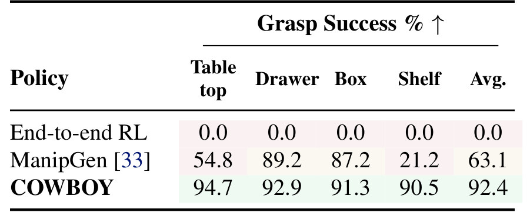
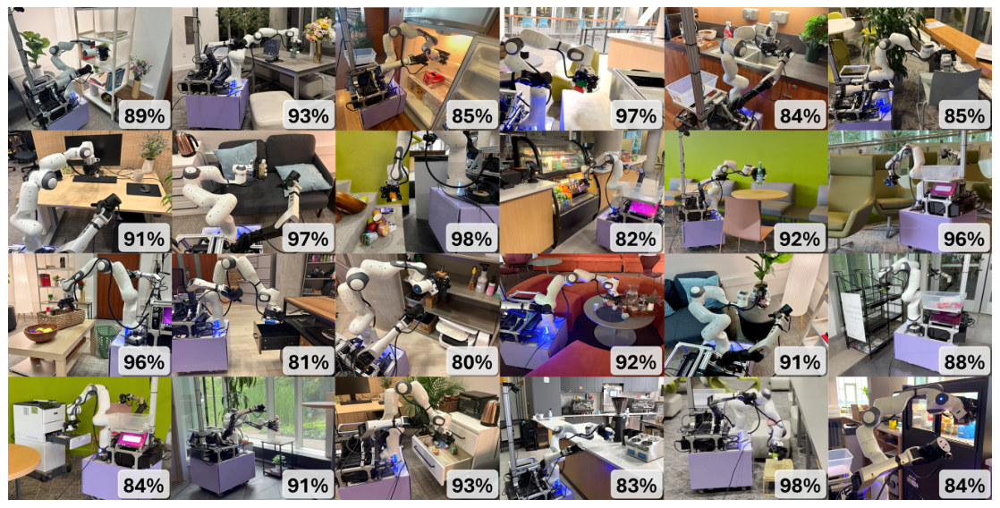
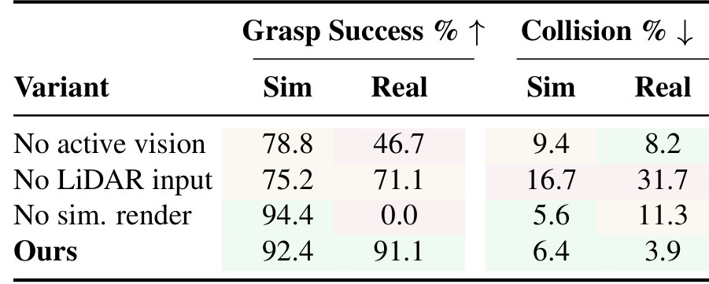
Limits
局限和开放问题
- 抓法只由场景和物体几何推出；很多物体按后续用途需要不同抓法，functional grasping 还要额外的条件（§6）。
- 侧抓场景最弱：真机书架类 89%、84%（Fig. 5），侧抓容易把物体碰倒成不可恢复状态（§5）；仿真 student 也在 shelf 上掉得最多（97.3 → 90.5，Tab. 2）。
- 只演示了抓取：铰接物体等技能要再训新的 local expert，论文说可以加，但没做（§3.2）。
- 要先给目标：真机每个 trial 都由人给一个让 SAM3 能检测到目标的 prompt（App. E.6）；训练也不便宜：每个 expert 单卡约 36 小时，蒸馏 8 张 A6000 约 60 小时。
For Robot learning in simulation
对我们有什么用
- WorldClaw 场景生成（Agent-centric real-to-sim）：COWBOY 的规模来自局部区域固定、外面的场景随便换（Fig. 3）。WorldClaw 生成的 white-box 场景可以直接当 full-scene 布局，只要保留 expert 需要的局部几何（书架开口、盒壁）。这是我们的推断，论文只用了程序化的 primitive 场景。
- Robotic harness：policy 只给 EE 目标和看向点，base 协调、避障、注视都交给 WBC（§3.1）。这和 Supervisor 管 robot mutation 的分工一致：带避障的 WBC 可以放在 Native API、Codex、Claude Code policy 下面当执行层（推断）。
- 仿真观测要像真机：GT 全点云训的 student 仿真 94.4%、真机 0.0%（Tab. 3）。在 RoboTwin、LIBERO 或 Genesis 里训要上真机的 policy，也该渲染部分观测；他们用采样点云做 z-buffer，以渲染精度换速度和显存（App. F）。